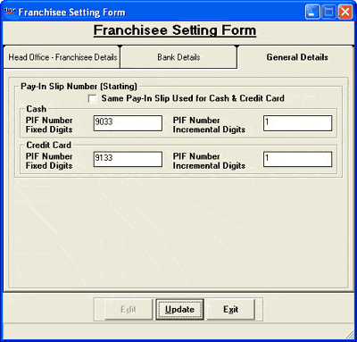

This section displays the general details about the franchisee.

Note:The system parameter Set the Length of the Pay Slip No for Cash And Credit under the category Franchisee need to be set to define the length of the pay slip number.
Pay Slip Number for Cash
X - Length of Pay Slip Number for Cash
Y - Length of the Fixed Digits for Cash
Z - Length of the Incremental Digits for Cash
Pay Slip Number for Credit
A - Length of Pay Slip Number for Credit
B - Length of the Fixed Digits for Credit
C - Length of the Incremental Digits for Credit
Default – 8;5;3#8;5;3
Pay-In Slip Number (Starting): The franchisee can print Pay-In-Slip for the payments remitted by the franchisee to the head office. The numbering pattern for such slips are provided here.
Same Pay-In Slip Used for Cash & Credit Card: Pay-In-Slips can be made for the payments made to HO for Cash Sales and Sales made using credit cards at the Franchisee store. Two separate series of numbering can be provided for printing these slips to clearly distinguish the cash sales or credit card sales. However, Shoper 9 allows generation of slips with one series for both if this box is selected.
Cash
PIF Number Fixed Digits: Displays the number, where each digit can denote the specific information of the franchisee, allotted by the HO. This number differentiates various franchisees.
PIF Number Incremental Digits: Displays the incremental number.
Credit Card
PIF Number Fixed Digits: Displays the number, where each digit can denote the specific information of the franchisee, allotted by the HO. This number differentiates various franchisees.
PIF Number Incremental Digits: Displays the incremental number.